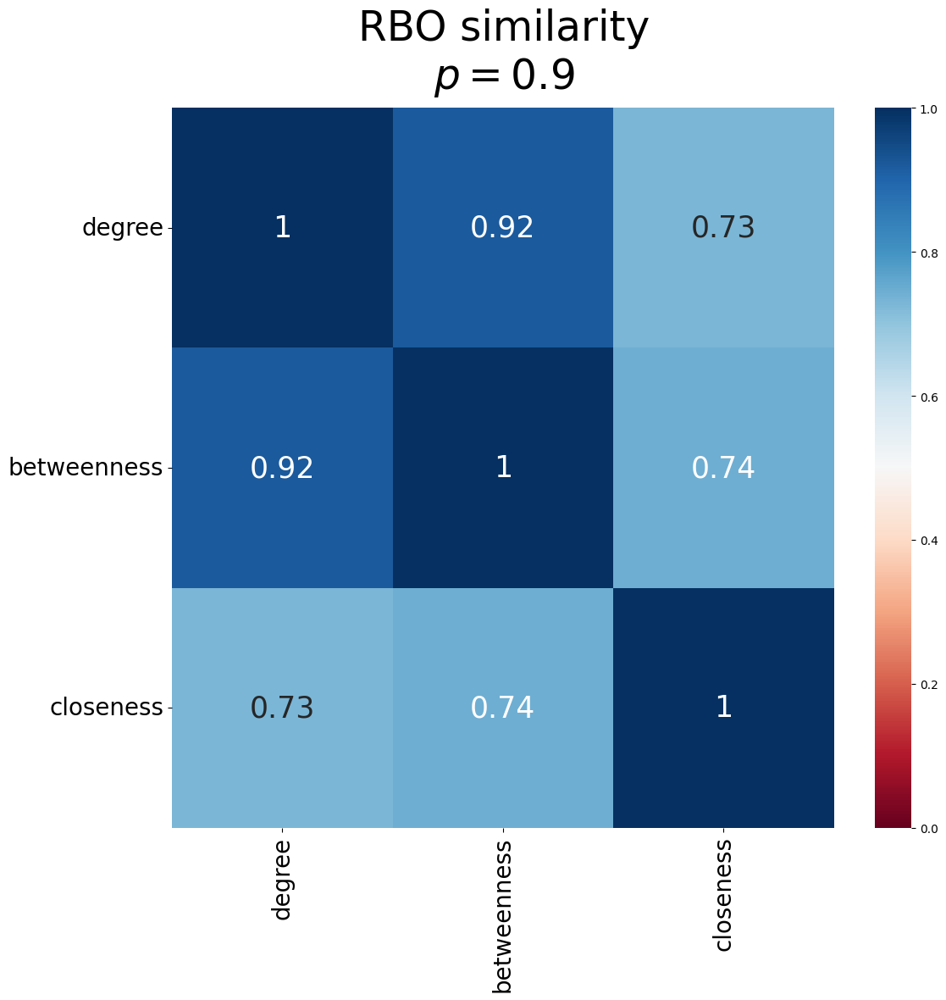

Quick start#
Generating a graph#
netpercolate uses networkx to generate graphs and compute (most) graph measures.
We can simply generate a graph using any models native to networkx or one can generate graphs with your own code. For simplicity’s sake, let’s assume that we have two graphs created based on the BA and ER models:
import networkx as nx
# generate the graphs
BA = nx.barabasi_albert_graph(100, 2)
ER = nx.erdos_renyi_grap(100, 0.2)
These networkx graph objects will be used then for the percolation experiment.
Ranking nodes and percolating the network#
netpercolate allows users to rank the nodes based on various network measures, such as degree centrality and so on. This is an important feature for optimal percolation where nodes are targeted based on a non-random manner.
from netpercolate.sequential_percolation import rank_node, standard_percolation
# ranking the nodes based on the different methods
list1 = rank_node(G, method = 'degree', weight = None)
list2 = rank_node(G, method = 'betweenness', weight = None)
list3 = rank_node(G, method = 'closeness', weight = None)
# percolate the network using the rankings
df = standard_percolation(G, rank = list1)
Using the standard_percolation function we can perform a simple sequential percolation on the network we previously generated. The function will return a pandas dataframe containing the $q$ fraction of nodes removed from the network and the corresponding size of Largest Connected Components (LCC):
Fraction |
LCC |
|
|---|---|---|
0 |
1 |
0 |
1 |
0.99 |
0 |
2 |
0.98 |
0 |
3 |
0.97 |
0 |
4 |
0.96 |
0 |
Evaluating the node ranking methods#
Sometimes we also wnat to understand how similar the ranking methods are. netpercolate allows us to compare the similarity between the rankings using rank-biased overlap (RBO). Using the function RBO_matrix, we can obtain the similarity between the ranks.
from netpercolate.evaluation import RBO_matrix
from netpercolate.viz import plot_matrix
matrix = RBO_matrix([list1, list2, list3], p = 0.9) # create numpy matrix
plot_matrix(matrix, p = 0.9), suptitle='RBO similarity',title = '$p = 0.9$', ticks_labels=['degree','betweenness','closeness'])
netpercolate offers a simple function plot_matrix that generates a seaborn heatmap:
